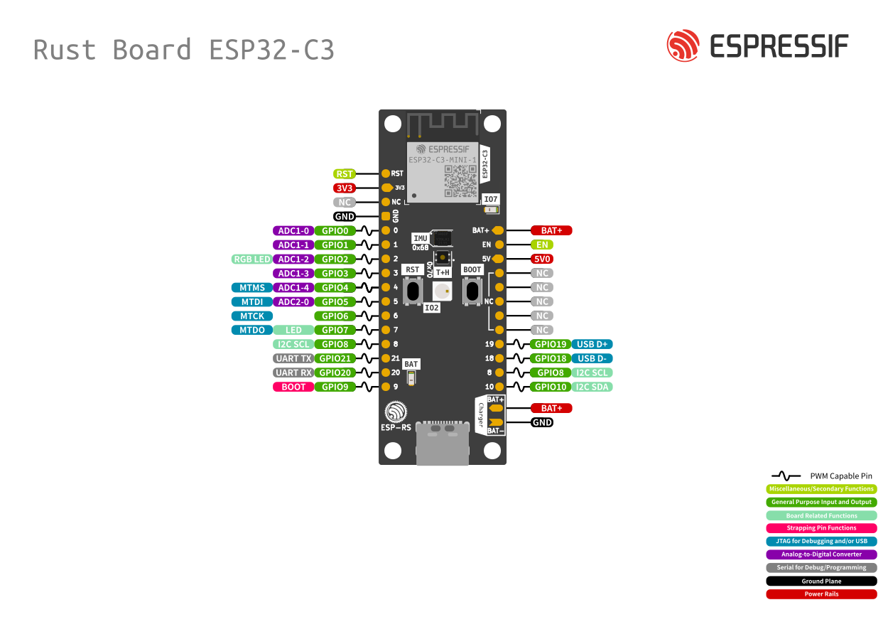
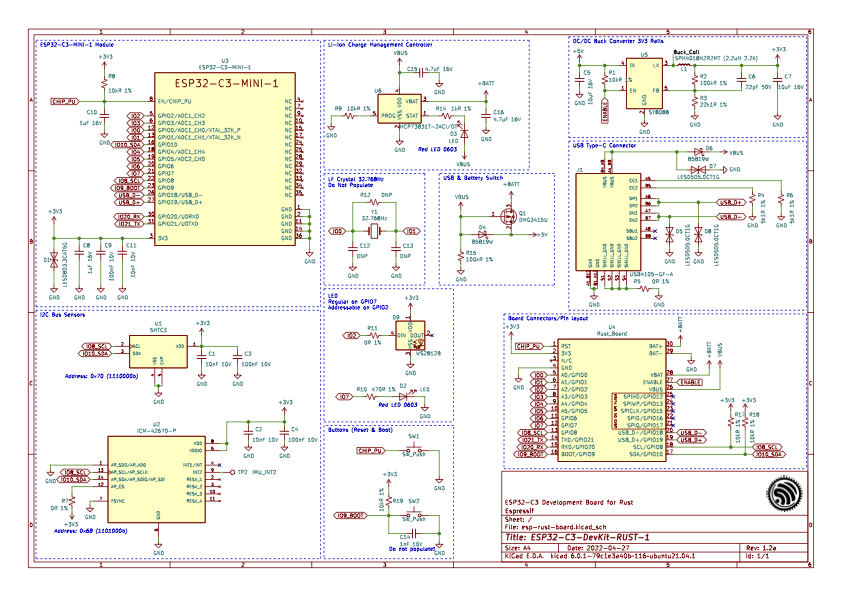

Práctica 2. Entorno de compilación. Uso de timers
Objetivos
El objetivo de esta práctica es familiarizarse con la estructura de componentes en que se basa la compilación de proyectos en ESP-IDF. Asímismo, aprovecharemos para utlizar timers. Trabajaremos los siguientes aspectos:
- Creación de componentes en nuestro proyecto.
- Incorporar componentes externos.
- Uso del componente
consolepara tener un entorno interactivo. - Familiarizarse con la API de High Resolution Timers en ESP/IDF.
Material de consulta
Para ver los detalles de cada aspecto de esta práctica se recomienda la lectura de los siguientes enlaces:
- Documentación sobre el sistema de compilación
- Documentación del componente
console - Documentación sobre la librería Argtable
- Documentación sobre CMake
- API de High Resolution Timers
- API sobre GPIO en ESP-IDF
Proyectos ESP-IDF
Tal y como hemos visto en clase, un proyecto ESP-IDF está formada de componentes.
un componente es la unidad en la que se organiza el código en un proyecto ESP-IDF. Cada componente se compila formando una librería estática, que posteriormente se enlazará junto al resto de componentes y al kernel de ESP-IDF para crear la aplicación. El código que incluyamos en la carpeta main no es más que otro componente, con pequeños matices que lo diferencian de otros.
Los elementos principales en ESP-IDF son:
- Proyecto. Un directorio que contiene todos los ficheros y configuración para construir un “app” (ejecutable). Incluye elementos como tabla de partición, sistemas de ficheros y bootloader
- Configuración de proyecto. Se mantiene en el fichero sdkconfig en el directorio raíz del proyecto. Se modifica a través de menuconfig. Cada proyecto tiene un único fichero de configuración.
- app. Es un ejecutable resultado de la compilación/enlazado. De un proyecto se suelen crear 2 apps
- Project app: el ejectuable principal con nuestro código
- Bootloader app: el programa inicial que se encarga de cargar nuestro código
- Componentes. Partes modulares del código que se compilan como librearías estáticas (ficheros .a) y se enlazan en la app. Algunos componentes los proporciona ESP-IDF, pero pueden ser externos https://components.espressif.com/ (aún no público)
- Target. Es el hardware para el que construimos la aplicación. Podemos comprobar los targets disponibles para una versión de ESP-IDF con el comando
idf.py -list-targets
La compilación se basa en la herramienta CMake, por lo que tendremos un fichero CMakeLists.txt para cada componente, y uno general para el proyecto. Así, la estructura general de un proyecto podría ser similar a:

El contenido mínimo del fichero CMakeLists.txt del proyecto (el que se encuentra en la carpeta myProject en el ejemplo anterior) es:
cmake_minimum_required(VERSION 3.5)
include($ENV{IDF_PATH}/tools/cmake/project.cmake)
project(si7021)
Componentes
Un componente es cualquier directorio en COMPONENT_DIRS que contenga un fichero CMakeLists.txt. Puede ser un directorio sin CMakeLists.txt pero con subdirectorios, cada uno de ellos con su CMakeLists.txt. Se creará una librería estática para cada componente, cuyo nombre será, por defecto, el nombre del directorio. Cada componente puede, asimismo, tener su propio fichero Kconfig.
El fichero CMakeLists.txt debe indicar las fuentes que se enlazarán en la librería y la ubicación de los ficheros de cabecera públicos del componente. Asimismo, puede indicar dependencias con otros componentes (si las hubiera)
idf_component_register(SRCS "foo.c" "bar.c"
INCLUDE_DIRS "include"
REQUIRES driver
)
La variable COMPONENT_DIRS indica los directorios en los que ESP-IDF buscará componentes. Creará bibliotecas para todos aquellos componentes que encuentre. Por defecto buscará en:
IDF_PATH/componentsPROJECT_DIR/componentsEXTRA_COMPONENT_DIRS
Es posible reescribir la variable COMPONENT_DIRSpara incluir algún directorio o, especialmente, para limitar la búsquda de directorios.
La variable EXTRA_COMPONENT_DIRS nos permite incluir directorios adicionales en la búsqueda de componentes. Las rutas pueden ser absolutas o relativas al directorio del proyecto. Se indica en el top-level CMakeLists.txt, antes del include.
La variable COMPONENTS permita hacer explícita la lista de componentes que queremos incluir en el proyecto. Como decíamos anteriormente, por defecto serán todos aquellos que se encuentren en COMPONENT_DIRS. Su uso permite reducir el tamaño del binario final, lo que puede resultar conveniente en muchos proyectos.
Aplicación Consola (opcional)
En muchos entornos resulta muy conveniente tener una aplicación de tipo consola: un intérprete de comandos que nos permita interaccionar de forma básica con el sistema. Muchos sistemas empotrados tienen la opción de arrancar en modo consola, para tareas de mantenimiento y depuración. En funcionamiento normal la consola no se ejecutará o se saldrá de dicho modo transcurrido un tiempo de inactividad, arrancándose entonces la aplicación real.
ESP-IDF incluye un componente llamado Console que nos da un servicio mínimo tipo REPL (Read-Evaluate-Print-Loop) El componente incluye toda la funcionalidad necesaria para el procesamiento/eidción de línea, basándose en la librería lineoise. De ese modo, sabe interpretar la acción de borrado, movimiento por cursores, auto completa, indica el formato de cada comando... Asimismo, tiene funciones para que sea sencillo registrar nuevos comandos escritos por nosotros mismos.
Vamos a partir del ejemplo de consola básico. Estudia el código, y responde a las siguientes preguntas:
Cuestión
- ¿Qué componente se está incluyendo además de los que siempre se incluyen por defecto?
- ¿Qué funcionalidad se importa de dicho componente?
- ¿Qué particiones se crean al volcar el proyecto en nuestro dispositivo?
Importar código externo como componente
Espressif tiene una base de datos de componentes que permite incorporar componentes open-source en nuestros proyectos ESP-IDF de forma sencilla. Podemos incluir un componente del registro mediante el comando idf.py add-dependency <componentName> o descargando el fichero de la web de componentes y copiándolo en nuestro proyecto. Bastará con copiar la carpeta descargada dentro de la carpeta components de nuestro proyecto.
En ocasiones, encontraremos códigos no incluidos en el registro oficial de Espressif pero que pueden resultar útiles para nuestros desarollos. Nuevamente, resulta aconsejable importar esos proyectos externos como componentes en nuestros proyectos. Y así lo haremos en la siguiente tarea:
Tarea
La placa de desarrollo ESP32-C3-DevKit-RUST-1 tiene dos sensores de temperatura. Uno está integrado en el propio ESP32-C3 (puedes econtrar su API en la documentación de ESP-IDF). El segundo está en la placa, tal y como se indica en su documentación. Se trata de un sensor SHTC3 de Sensirion que está conectado al SoC mediante el bus I2C.
- A partir del código disponible en este repositorio de Github https://github.com/mauriciobarroso/shtc3 crea un componente llamado
shtc3para poder utilizar el sensor sin necesidad de consultar el datasheet. Los ficheros del repositorio ya están preparados para usarse como un componente en ESP-IDF v5.3 Sólo debes ubicarlos en la carpeta correcta. - En el fichero principal de tu aplicación, deberás inicializar el driver del bus I2C y el propio sensor. Puedes usar el código que se proporciona a continuación.
shtc3_t tempSensor;
i2c_master_bus_handle_t bus_handle;
void init_i2c(void) {
uint16_t id;
i2c_master_bus_config_t i2c_bus_config = {
.clk_source = I2C_CLK_SRC_DEFAULT,
.i2c_port = I2C_NUM_0,
.scl_io_num = 8,
.sda_io_num = 10,
.glitch_ignore_cnt = 7,
.flags.enable_internal_pullup = true,
};
ESP_ERROR_CHECK(i2c_new_master_bus(&i2c_bus_config, &bus_handle));
shtc3_init(&tempSensor, bus_handle, 0x70);
}
Tarea
En relación al código anterior:
- ¿Por qué scl_io_num es 8? ¿Por qué sda_io_num es 10? ¿Se pueden cambiar?
- ¿Por qué la llamada a shtc3_init() reciba 0x70 como tercer argumento?
Controladores GPIO
Los controladores de GPIO (General Purpose Input-Ouput) permiten controlar ciertos pines de nuestro dispositivo para usarlos como entrada (por ejemplo, para conectar un botón) o salida (por ejemplo para conectar un LED) o con funciones especiales (que forme parte de un bus serie, por ejemplo).
Placa ESP32-DevKitC v4
El SoC ESP32 que usamos proporciona 40 GPIO pads (el SoC no tiene pines propiamente dichos, sino conectores, normalmente de superfície, que se deminan pad). El módulo WROOM-32 que usamos expone 38 de ellos, que son accesibles a traves de los pines (los conectores físicos a ambos lados de la placa) que incorpora nuestra placa DevKitC.
En la siguiente figura se muestra la disposición de los pines en la placa ESP32-DevKitC que usamos en nuestras prácticas:

En la web de Espressif se pueden encontrar más detalles de la placa.
Como se indica en la documentación de ESP-IDF, algunos de esos pines tiene un propósito específico. Por ejemplo, GPIO6-11 y 16-17 no deben usarse porque están internamente conectados a la memoria SPI flash. También nos indica que los pines del canal 2 del ADC (ADC2) NO deben usarse mientras se utiliza Wi-Fi. Es muy conveniente leer todas las restricciones para evitar problemas en nuestros desarrollos.
Placa Rust Board ESP32-C3
En la siguiente figura se muestra la disposición de los pines en la placa ESP32-Rust board que usamos en nuestras prácticas:

En la web de la placa se pueden encontrar más detalles sobre los componenentes, esquemáticos, BOM...
Entre otra documentación podéis encontrar el esquemático de la placa, que permite conocer a qué pines del SoC se conectan los diferentes elementos (LEDs, botones) de la placa:

API de ESP-IDF
La documentación muestra también la API que ofrece ESP-IDF para configurar los pines (entrada o salida, uso de pull-up/pull-down) establecer un valor lógico (0 ó 1)en un pin (previamente configurado como salida) o leer el valor lógico de un pin (configurado como entrada).
El siguiente código, extraído del ejemplo de GPIO proporcionado en la distribución ESP-IDF, muestra cómo configurar los pines GPIO18 y GPIO19 como salida. Observa cómo se construye la máscara de bits GPIO_OUTPUT_PIN_SEL para indicar a gpio_config() qué pines se configuran.
#define GPIO_OUTPUT_IO_0 18
#define GPIO_OUTPUT_IO_1 19
#define GPIO_OUTPUT_PIN_SEL ((1ULL<<GPIO_OUTPUT_IO_0) | (1ULL<<GPIO_OUTPUT_IO_1))
gpio_config_t io_conf;
io_conf.intr_type = GPIO_PIN_INTR_DISABLE;
io_conf.mode = GPIO_MODE_OUTPUT;
io_conf.pin_bit_mask = GPIO_OUTPUT_PIN_SEL;
io_conf.pull_down_en = 0;
io_conf.pull_up_en = 0;
gpio_config(&io_conf);
Posteriormente, podemos establecer el valor lógico de la salida con una llamada similar a gpio_set_level(GPIO_OUTPUT_IO_1, valor);, siendo valor igual a 0 ó 1.
De forma similar el siguiente código configura los pines 4 y 5 como entrada:
#define GPIO_INPUT_IO_0 4
#define GPIO_INPUT_IO_1 5
#define GPIO_INPUT_PIN_SEL ((1ULL<<GPIO_INPUT_IO_0) | (1ULL<<GPIO_INPUT_IO_1))
gpio_config_t io_conf;
io_conf.pin_bit_mask = GPIO_INPUT_PIN_SEL;
io_conf.mode = GPIO_MODE_INPUT;
gpio_config(&io_conf);
Posteriormente, podremos leer el valor lógico de esos pines con una llamada a gpio_get_level().
Busca información
En relación al código anterior: en la configuración anterior, los pines de entrada deben muestrearse periódicamente para conocer su estado. Investiga cómo configurar los pines como entrada de modo que generen una interrupción cuando se produce un flanco (subida, bajado o ambos).
ESP-IDF: High Resolution Timer
Un Timer es un temporizador que podemos programar para que nos avise transcurrido un cierto tiempo. Es similar a una cuenta atrás con alarma y es un mecanismo perfecto para planificar tareas periódicas. El aviso será asíncrono, por lo que no sabemos en qué punto de nuestro código estaremos cuando se dispare la alarma.
ESP-IDF ofrece un API para el uso de timers que, a su vez, utlizan los timers de 64 bits disponibles en el hardware para garantizar una precisión de hasta 50us.
Cuando programamos un timer podemos optar por 2 comportamientos:
- One-shot (
esp_timer_start_once()), que programrá el timer para que genere una única alarma transcurrido el plazo establecido. - Continuo (
esp_timer_start_periodic()) que re-programará el timer de forma automática cada vez que la cuenta llegue a 0. Este mecanismo es el idóneo para muestreos periódicos.
Cuando el timer genere la alarma, se ejecutará un callback, una función que habremos definido previamente (y asociado a ese timer). Dicha función se ejecutará en el contexto de una tarea específica (ESP_TIMER_TASK) o en el de una rutina de tratamiento de interrupción (ESP_TIMER_ISR). En nuestro caso, es aconsejable usar el primer mecanismo (tarea específica).
En la documentación de ESP-IDF podéis encontrar el resto de llamadas relevantes para crear y configurar timers. Es muy recomendable, asimismo, estudiar los ejemplos disponibles en la distribución
A continuación se incluye un ejemplo de uso, extraíado de la distribución de ESP-IDF:
void app_main() {
...
const esp_timer_create_args_t periodic_timer_args = {
.callback = &periodic_timer_callback,
.name = "periodic" };
esp_timer_handle_t periodic_timer; esp_timer_create(&periodic_timer_args, &periodic_timer);
...
esp_timer_start_periodic(periodic_timer, 500000); ....
esp_timer_stop(periodic_timer); ...
esp_timer_delete(periodic_timer);
}
static void periodic_timer_callback(void* arg) {
int64_t time_since_boot = esp_timer_get_time();
printf("Periodic timer called, time since boot: %lld us",time_since_boot);
}
Encendido de LEDs con GPIO y timer
La placa de desarrollo ESP32-C3-DevKit-RUST-1 tiene dos LEDs, uno de ellos conectado
Tarea
Configura el GPIO asociado al LED (GPIO 7) como salida. Programa un timer para cambiar el estado del LED cada segundo.
Ejercicio final
Completa este ejercicio después de haber resuelto los anteriores. De cara la entrega de la práctica, sólo es necesario entregar este ejercicio
Tareas
Partiendo del ejemplo Blink (usando el denominado LED_STRIP en GPIO 2, no como la usamos el primer día), crea una applicación que:
- Incluya el componente
shtc3en tu proyecto. - Muestree la temperatura cada segundo utilizando un timer.
- Muestre el progreso de la temperatura en el LED programable de la placa. Si la temperatura es inferior a 20 grados, estará apagado. Por cada grado que suba la temperatura, se modificará el color/intensidad del LED.
- Para variar el color/intensidad, sólo debes cambiar los 3 últimos argumentos de la llamada
led_strip_set_pixel()del código de ejemplo.
- Para variar el color/intensidad, sólo debes cambiar los 3 últimos argumentos de la llamada
- Se programará un segundo timer que mostrará por pantalla (puerto serie) la última medida de temperatura realizada cada 10 segundos.
- [Opcional] Configura el GPIO 9, al que está conectado el botón BOOT, para que genere interrupciones cuando soltemos el botón. ¿Qué valor lógico se lee del GPIO 9 con el botón pulsado?. Consulta la documentación de GPIO y el ejemplo de GPIO genérico para entender cómo configurar un GPIO como entrada por interrupciones.